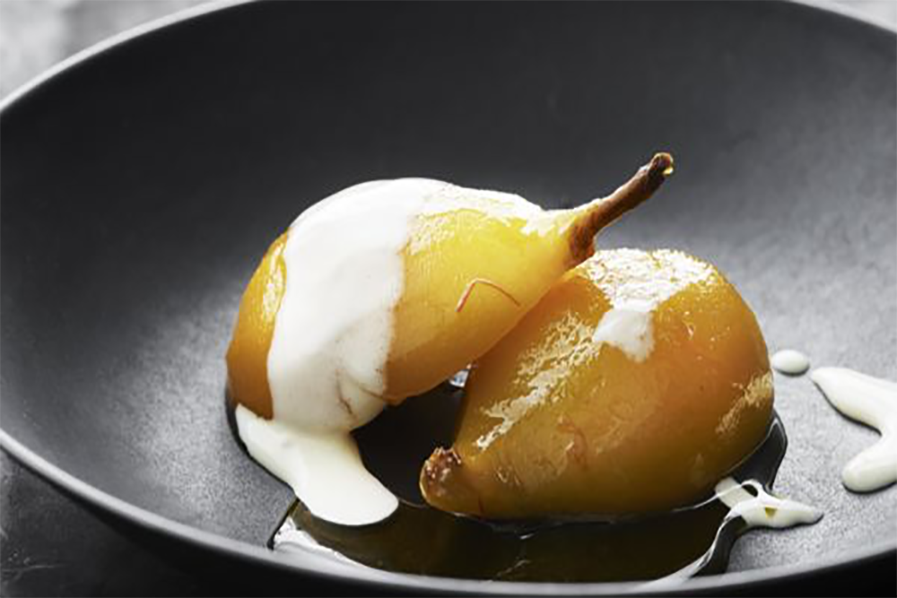

OPSKRIFT: Pærer porcheret i hvidvin
Porcherede pærer er en rigtig efterårsret, men Carsten mener den fungerer året rundt. Stjerneanis og safran giver en marcipan lignende smag, der omsluttes af en fløjsblød creme som tilbehør.